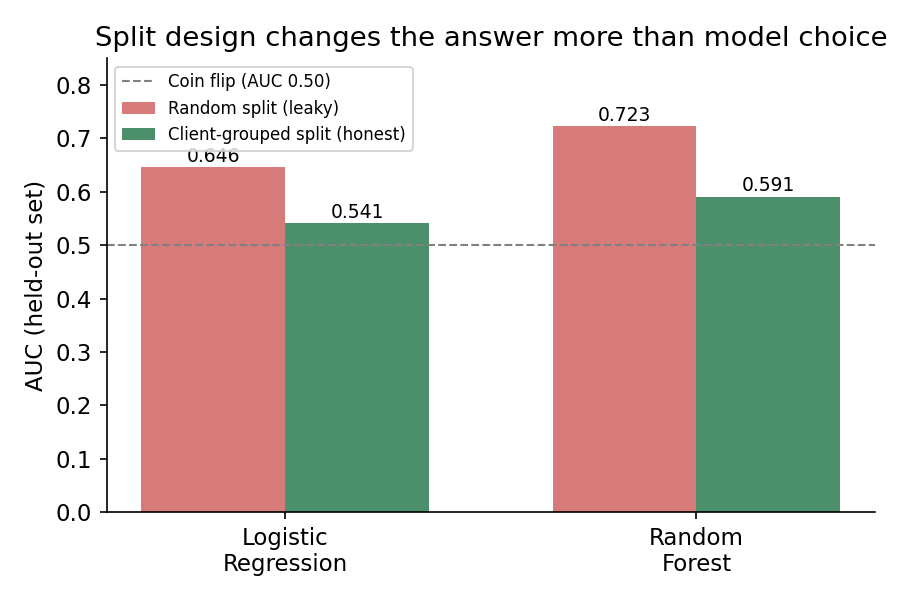
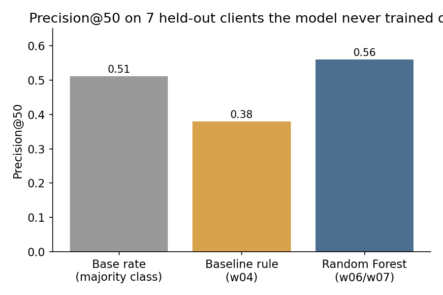
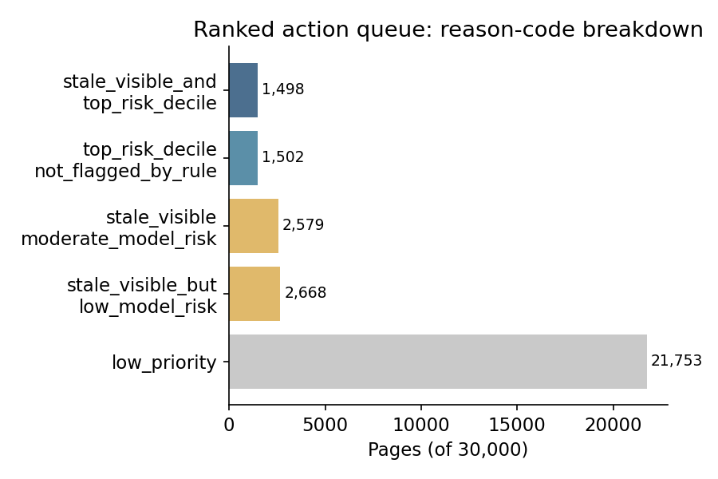

trend_direction ==
"down") and validated it on 7 clients held out entirely from training. Under an honest
client-grouped split, the model reaches AUC 0.591 and precision@50 of 0.56 — beating a transparent
staleness-and-visibility rule (AUC 0.492, precision@50 0.38) and a 0.511 base rate. A naive random
split would have overstated the same model at AUC 0.723, almost entirely from client-level leakage.
The result is a decision-support ranked queue, not a certainty about any single page.
Among a client's existing pages, which ones are already declining in search visibility right now — and can a validated model rank that risk more usefully than a simple, transparent rule an editor could read in one sentence? The output is a ranked review queue with a reason code per page, feeding a human decision — never an automated rewrite, unpublish, or redirect.
30,000 pages across 32 pseudonymized clients, one row per page, built from 90-day GSC/GA4 aggregates. No client names, domains, raw URLs, or private query text appear anywhere in this page or the underlying repo.
Excluded from modeling: trend_direction and trend_pct (these build the
label), and the two raw 30-day impression windows trend_pct is computed from — a
leakage check confirmed adding either back in inflates AUC to a fake 0.85–1.00.
client_id is used only to group the train/test split, never as a model input.
Baseline: a page is flagged if it's stale (≥90 days since last update) and visible (90-day impressions between 300 and 30,000) — two of the same signals available to the model, fully transparent, scored on the same rows.
Model: Random Forest (300 trees, depth 6, class-balanced), chosen because several audited signals — like ranking position — turned out to be hump-shaped rather than linear, which a plain logistic fit represents poorly.
Label: is_declining_label = (trend_direction == "down") — used
directly rather than hand-built from scratch.
Split: client-grouped 80/20 — 25 clients in training, 7 held out entirely, zero overlap. Clients repeat across many rows, so a row-level split lets a client's other pages leak the answer.

| Method | AUC | Precision@20 | Precision@50 |
|---|---|---|---|
| Base rate (majority class) | — | 0.51 | 0.51 |
| Baseline rule | 0.492 | 0.45 | 0.38 |
| Logistic Regression | 0.541 | 0.50 | 0.56 |
| Random Forest | 0.591 | 0.50 | 0.56 |
All rows: 7 held-out clients never seen in training, identical split and rows throughout.


review_for_refresh_priority (1,498 pages: stale, visible, and
in the model's top risk decile) — after checking the top of the list isn't dominated by a single
client. spot_check_only pages (2,668, where the rule and model disagree) are never
silently dropped and never fully automated.
Full code, seeds (42 throughout), and re-run instructions live in the repo:
work/notebooks/capstone.ipynb reproduces every number on this page from a fresh
clone. See work/capstone_report.md for the complete eight-section write-up this
page summarizes.